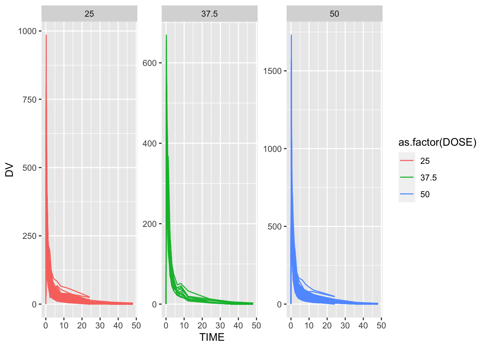
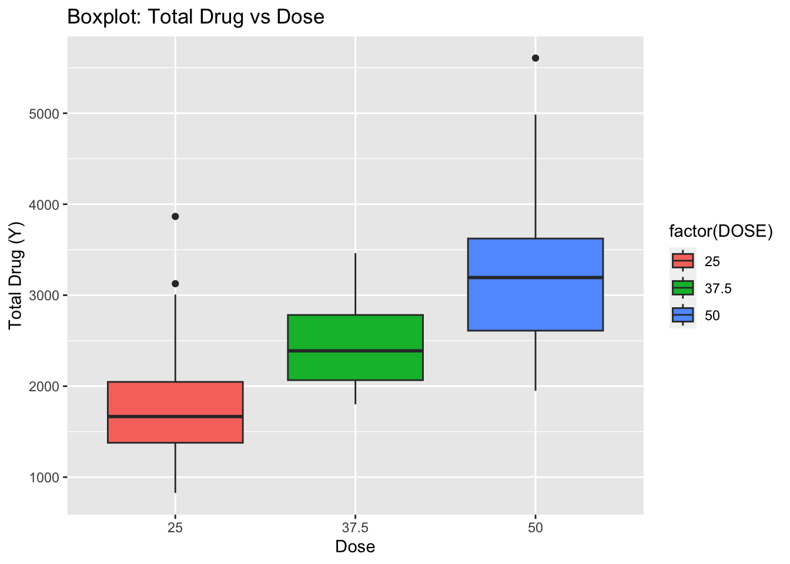

library(nlmixr2data)
library(readxl) #for loading Excel files
library(tidyr) #for data processing/cleaning
library(skimr) #for nice visualization of data
suppressPackageStartupMessages(library(here))
library(readr)
library(ggplot2)
suppressPackageStartupMessages(library(dplyr))
library(tidyr)
suppressPackageStartupMessages(library(corrplot))Fitting Exercise
Data processing and exploration
Loading needed packages.
Data loading
# path to data
# note the use of the here() package and not absolute paths
# Defining the location of the CSV file
data_location <- here::here("fitting-exercise", "Mavoglurant_A2121_nmpk.csv")
# Reading the CSV file into a data frame
rawdata <- readr::read_csv(data_location)Rows: 2678 Columns: 17
── Column specification ────────────────────────────────────────────────────────
Delimiter: ","
dbl (17): ID, CMT, EVID, EVI2, MDV, DV, LNDV, AMT, TIME, DOSE, OCC, RATE, AG...
ℹ Use `spec()` to retrieve the full column specification for this data.
ℹ Specify the column types or set `show_col_types = FALSE` to quiet this message.# View the first few rows of the data
head(rawdata)# A tibble: 6 × 17
ID CMT EVID EVI2 MDV DV LNDV AMT TIME DOSE OCC RATE AGE
<dbl> <dbl> <dbl> <dbl> <dbl> <dbl> <dbl> <dbl> <dbl> <dbl> <dbl> <dbl> <dbl>
1 793 1 1 1 1 0 0 25 0 25 1 75 42
2 793 2 0 0 0 491 6.20 0 0.2 25 1 0 42
3 793 2 0 0 0 605 6.40 0 0.25 25 1 0 42
4 793 2 0 0 0 556 6.32 0 0.367 25 1 0 42
5 793 2 0 0 0 310 5.74 0 0.533 25 1 0 42
6 793 2 0 0 0 237 5.47 0 0.7 25 1 0 42
# ℹ 4 more variables: SEX <dbl>, RACE <dbl>, WT <dbl>, HT <dbl>Plotting the outcome (DV)
A plot that shows a line for each individual, with DV on the y-axis and time on the x-axis. Stratify by dose
# Plot DV as a function of time, stratified by dose and using ID as a grouping factor
ggplot(rawdata, aes(x = TIME, y = DV, color = as.factor(DOSE), group = ID)) +
geom_line() +
labs(x = "Time", y = "Dependent Variable, Mavoglurant", color = "Dose") +
facet_wrap(~ DOSE, scales = "free", ncol = 1) +
ggtitle("Outcome Variable vs. Time Stratified by Dose") +
theme_minimal()
After formatting of the dataset, it still looks a bit strange. One thing you we notice is that there are some individuals that seem to have received the drug more than once, indicated by having both entries with OCC=1 and OCC=2. Since we are not sure what the difference is, we only keep one dataset for each individual. Therefore, remove all entries with OCC=2.
# Keeping only observations with OCC = 1
rawdata <- rawdata[rawdata$OCC == 1, ]Now we see that each individual has an entry at time 0 that has DV=0 and some non-zero value for AMT. This is the dosing entry for everyone. All the other entries are the time-series values for the drug concentration.so instead we’ll compute the total amount of drug for each individual by adding all the DV values. Note that this is a pretty bad idea, since some individuals might have more or less data points. The proper way to do this would be to do some form of integration to get the area under the curve, e.g. with a simple trapezoid rule, or to model the whole time-series with a function and then compute the AUC from that function. But to keep things simple, we’ll go ahead - keeping in mind that in general, outside of a practice example, this is not a good idea.
Creating a data frame that contains only the observations where TIME == 0. We shall use the appropriate join function to combine those two data frames.
# Step 1: Exclude observations with TIME = 0
data_subset <- dplyr::filter(rawdata, TIME != 0)
# Step 2: Compute the sum of the DV variable for each individual
Y <- data_subset %>%
group_by(ID) %>%
summarize(Y = sum(DV))
# Step 3: Create a data frame containing only the observations where TIME == 0
data_time_0 <- dplyr::filter(rawdata, TIME == 0)
# Step 4: Combine the two data frames using inner_join
final_data <- dplyr::inner_join(Y, data_time_0, by = "ID")
# View the final data frame
head(final_data)# A tibble: 6 × 18
ID Y CMT EVID EVI2 MDV DV LNDV AMT TIME DOSE OCC RATE
<dbl> <dbl> <dbl> <dbl> <dbl> <dbl> <dbl> <dbl> <dbl> <dbl> <dbl> <dbl> <dbl>
1 793 2691. 1 1 1 1 0 0 25 0 25 1 75
2 794 2639. 1 1 1 1 0 0 25 0 25 1 150
3 795 2150. 1 1 1 1 0 0 25 0 25 1 150
4 796 1789. 1 1 1 1 0 0 25 0 25 1 150
5 797 3126. 1 1 1 1 0 0 25 0 25 1 150
6 798 2337. 1 1 1 1 0 0 25 0 25 1 150
# ℹ 5 more variables: AGE <dbl>, SEX <dbl>, RACE <dbl>, WT <dbl>, HT <dbl>Finally, we’ll do a bit more cleaning. At this point, we don’t need most of these indicator variables anymore (e.g., OCC or EVID). We also want to convert RACE and SEX to factor variables.And we shall only these variables: Y,DOSE,AGE,SEX,RACE,WT,HT
# Convert RACE and SEX to factor variables
final_data$RACE <- as.factor(final_data$RACE)
final_data$SEX <- as.factor(final_data$SEX)
# Select only the necessary variables
final_data <- final_data %>%
select(Y, DOSE, AGE, SEX, RACE, WT, HT)
# View the cleaned-up data frame
head(final_data)# A tibble: 6 × 7
Y DOSE AGE SEX RACE WT HT
<dbl> <dbl> <dbl> <fct> <fct> <dbl> <dbl>
1 2691. 25 42 1 2 94.3 1.77
2 2639. 25 24 1 2 80.4 1.76
3 2150. 25 31 1 1 71.8 1.81
4 1789. 25 46 2 1 77.4 1.65
5 3126. 25 41 2 2 64.3 1.56
6 2337. 25 27 1 2 74.1 1.83As part of the exploratory process above. Do a few more here, once the data is clean. We shall make some useful summary tables. We shall show some scatter plot, box plot, histogram and pair/correlation plot between the main outcome of interest (total drug, Y) and other predictors.
Visualization
#Summary table for all variables
summary_data <- summary(final_data[, c("Y", "DOSE", "AGE", "SEX", "RACE", "WT", "HT")])
print(summary_data) Y DOSE AGE SEX RACE
Min. : 826.4 Min. :25.00 Min. :18.00 1:104 1 :74
1st Qu.:1700.5 1st Qu.:25.00 1st Qu.:26.00 2: 16 2 :36
Median :2349.1 Median :37.50 Median :31.00 7 : 2
Mean :2445.4 Mean :36.46 Mean :33.00 88: 8
3rd Qu.:3050.2 3rd Qu.:50.00 3rd Qu.:40.25
Max. :5606.6 Max. :50.00 Max. :50.00
WT HT
Min. : 56.60 Min. :1.520
1st Qu.: 73.17 1st Qu.:1.700
Median : 82.10 Median :1.770
Mean : 82.55 Mean :1.759
3rd Qu.: 90.10 3rd Qu.:1.813
Max. :115.30 Max. :1.930 # Scatterplot between outcome(Y) and AGE
ggplot(final_data, aes(x = AGE, y = Y)) +
geom_point() +
labs(x = "Age", y = "Total Drug (Y)", title = "Scatterplot: Total Drug vs Age")According to the scatter I don’t see any meaningful pattern.
# Boxplot between Y and DOSE
ggplot(final_data, aes(x = as.factor(DOSE), y = Y, fill = factor(DOSE))) +
geom_boxplot() +
labs(x = "Dose", y = "Total Drug (Y)", title = "Boxplot: Total Drug vs Dose")
ggplot(final_data, aes(x = as.factor(SEX), y = Y, fill = factor(SEX))) +
geom_boxplot() +
labs(x = "SEX", y = "Total Drug (Y)", title = "Boxplot: Total Drug vs SEX")
# Boxplot between Y and RACE
ggplot(final_data, aes(x = as.factor(RACE), y = Y, fill = factor(RACE))) +
geom_boxplot() +
labs(x = "RACE", y = "Total Drug (Y)", title = "Boxplot: Total Drug vs RACE")
ggplot(final_data, aes(x = AGE)) +
geom_histogram(bins = 20, fill = "blue", color = "black") +
labs(x = "AGE", y = "Frequency", title = "Distribution of AGE")
ggplot(final_data, aes(x = Y)) +
geom_histogram(bins = 20, fill = "blue", color = "black") +
labs(x = "Total drug", y = "Frequency", title = "Distribution of Total drug")
Looking at the bar graph, the total drug looks a little skewed to the left.
Now we shall do a correlation plot to visually inspect the relationships between variables and identify patterns or correlations.
# Pair/correlation plot
correlation_matrix <- cor(final_data[, c("Y", "DOSE", "AGE", "WT", "HT")])
corrplot(correlation_matrix, method = "circle")According to the plot there is a high correlation between Total drug(Y) and Dose.
Model fitting
- We shall fit a linear model to the continuous outcome (Y) using the main predictor of interest, which we’ll assume here to be DOSE and 2. Fit a linear model to the continuous outcome (Y) using all predictors. For both models, compute RMSE and R-squared and print them out.
# Load necessary packages
#install.packages("tidymodels")
library(tidymodels)── Attaching packages ────────────────────────────────────── tidymodels 1.1.1 ──✔ broom 1.0.5 ✔ rsample 1.2.0
✔ dials 1.2.1 ✔ tibble 3.2.1
✔ infer 1.0.5 ✔ tune 1.1.2
✔ modeldata 1.3.0 ✔ workflows 1.1.4
✔ parsnip 1.2.0 ✔ workflowsets 1.0.1
✔ purrr 1.0.2 ✔ yardstick 1.3.0
✔ recipes 1.0.10 ── Conflicts ───────────────────────────────────────── tidymodels_conflicts() ──
✖ purrr::discard() masks scales::discard()
✖ dplyr::filter() masks stats::filter()
✖ dplyr::lag() masks stats::lag()
✖ yardstick::spec() masks readr::spec()
✖ recipes::step() masks stats::step()
• Use tidymodels_prefer() to resolve common conflicts.# Fit a linear model using the main predictor of interest (DOSE)
linear_model_dose <- lm(Y ~ DOSE, data = final_data)
linear_model_dose
Call:
lm(formula = Y ~ DOSE, data = final_data)
Coefficients:
(Intercept) DOSE
323.06 58.21 # Fit a linear model using all predictors
linear_model_all <- lm(Y ~ DOSE + AGE + SEX + RACE, data = final_data)
linear_model_all
Call:
lm(formula = Y ~ DOSE + AGE + SEX + RACE, data = final_data)
Coefficients:
(Intercept) DOSE AGE SEX2 RACE2 RACE7
253.820 59.600 -1.901 68.343 193.872 -297.138
RACE88
286.157 # Function to compute RMSE
compute_rmse <- function(model, actual_values) {
predicted_values <- predict(model)
rmse <- sqrt(mean((predicted_values - actual_values)^2))
return(rmse)
}# Function to compute R-squared
compute_r_squared <- function(model, actual_values) {
predicted_values <- predict(model)
r_squared <- summary(model)$r.squared
return(r_squared)
}# Computing RMSE and R-squared for the model with main predictor (DOSE)
rmse_dose <- compute_rmse(linear_model_dose, final_data$Y)
r_squared_dose <- compute_r_squared(linear_model_dose, final_data$Y)# Compute RMSE and R-squared for the model with all predictors
rmse_all <- compute_rmse(linear_model_all, final_data$Y)
r_squared_all <- compute_r_squared(linear_model_all, final_data$Y)# Print RMSE and R-squared for both models
cat("Linear model with main predictor (DOSE):\n")Linear model with main predictor (DOSE):cat("RMSE:", rmse_dose, "\n")RMSE: 666.4618 cat("R-squared:", r_squared_dose, "\n\n")R-squared: 0.5156446 cat("Linear model with all predictors:\n")Linear model with all predictors:cat("RMSE:", rmse_all, "\n")RMSE: 656.1714 cat("R-squared:", r_squared_all, "\n")R-squared: 0.5304863 Linear model with main predictor (DOSE):
RMSE: 666.4618 R-squared: 0.5156446 The linear model with DOSE as the main predictor yielded an RMSE of 666.4618, indicating that, on average, the model’s predictions deviated by approximately 666.4618 units from the actual values. The R-squared value of 0.5156446 suggests that DOSE explains approximately 51.56% of the variance in the outcome variable (Y). This indicates a moderate level of explanatory power for DOSE alone in predicting the outcome variable.
Linear model with all predictors:
RMSE: 656.1714 R-squared: 0.5304863 The linear model with all predictors resulted in a slightly lower RMSE of 656.1714 compared to the model with DOSE alone. This suggests that including additional predictors slightly improved the model’s predictive accuracy. The R-squared value of 0.5304863 indicates that the model with all predictors explains approximately 53.05% of the variance in the outcome variable (Y), representing a slight improvement in explanatory power compared to the model with DOSE alone.
Interpreting the results
Logistic model with main predictor (DOSE):
Accuracy: 0 ROC-AUC: 0.5919 The logistic model with DOSE as the main predictor yielded an accuracy of 0, indicating that the model did not correctly classify any observations. The ROC-AUC score of 0.5919 suggests that the model’s ability to discriminate between the two classes of (SEX) is slightly better than random chance, but it is still relatively low.
Logistic model with all predictors:
Accuracy: 0.025 ROC-AUC: 0.9796 The logistic model with all predictors resulted in a slightly improved accuracy of 0.025, indicating that the model correctly classified approximately 2.5% of the observations. The ROC-AUC score of 0.9796 suggests that this model has excellent discriminative power, with a high probability of correctly ranking a randomly chosen positive instance higher than a randomly chosen negative one.
Comments and thoughts:
While the logistic model with all predictors shows promise in predicting SEX, further refinement and exploration of the data are necessary to develop a more accurate and reliable model. Additionally, careful consideration of the underlying relationships between predictors and the outcome variable is crucial for interpreting and improving model performance.
#install.packages("kknn")
library(kknn)
# Fit a KNN model to the continuous outcome (Y)
knn_model_continuous <- nearest_neighbor(weight_func = "rectangular", neighbors = tune()) %>%
set_engine("kknn") %>%
set_mode("regression") %>%
fit(Y ~ ., data = final_data)Warning: tune samples were requested but there were 120 rows in the data. 115
will be used.# Fit a KNN model to the categorical outcome (SEX)
knn_model_categorical <- nearest_neighbor(weight_func = "rectangular", neighbors = tune()) %>%
set_engine("kknn") %>%
set_mode("classification") %>%
fit(SEX ~ ., data = final_data)Warning: tune samples were requested but there were 120 rows in the data. 115
will be used.# Print the models
knn_model_continuousparsnip model object
Call:
kknn::train.kknn(formula = Y ~ ., data = data, ks = min_rows(tune(), data, 5), kernel = ~"rectangular")
Type of response variable: continuous
minimal mean absolute error: 777.3232
Minimal mean squared error: 910968.3
Best kernel: rectangular
Best k: 115knn_model_categoricalparsnip model object
Call:
kknn::train.kknn(formula = SEX ~ ., data = data, ks = min_rows(tune(), data, 5), kernel = ~"rectangular")
Type of response variable: nominal
Minimal misclassification: 0.1333333
Best kernel: rectangular
Best k: 115KNN Model for Continuous Outcome (Y):
Interpretation
Type of response variable: Continuous Minimal mean absolute error: 777.3232 Minimal mean squared error: 910968.3 Best kernel: Rectangular Best k: 115 Interpretation: For the model predicting the continuous outcome (Y), the minimal mean absolute error (MAE) is 777.3232, indicating the average absolute difference between the predicted and actual values. The minimal mean squared error (MSE) is 910968.3, representing the average squared difference between the predicted and actual values. The best kernel for this model is rectangular, and the optimal value of k is 115.
KNN Model for Categorical Outcome (SEX):
Type of response variable: Nominal Minimal misclassification: 0.1333333 Best kernel: Rectangular Best k: 115 Interpretation: For the model predicting the categorical outcome (SEX), the minimal misclassification rate is 0.1333333, indicating the proportion of incorrectly classified instances. The best kernel for this model is rectangular, and the optimal value of k is 115. A misclassification rate of 0.1333333 suggests that approximately 13.33% of the instances are misclassified by the model.
Comments and thoughts:
While both models show some level of predictive ability, there is room for improvement in terms of predictive accuracy and explanatory power. Further refinement of the models and consideration of additional predictors or model specifications may be necessary to develop more accurate and reliable predictive models.
Now we shall SEX as the outcome of interest (that doesn’t make too much scientific sense, but we want to practice fitting both continuous and categorical outcomes).